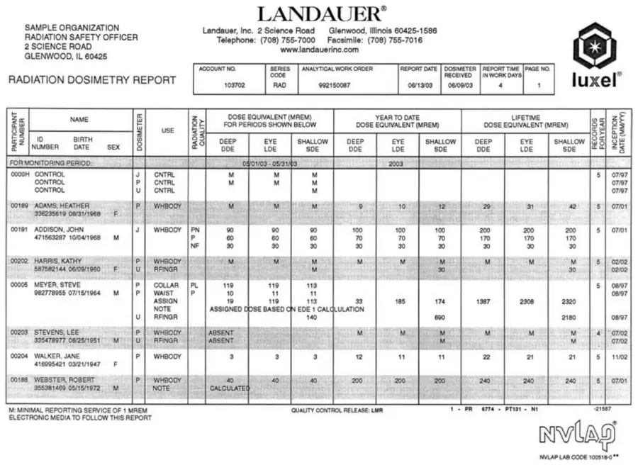
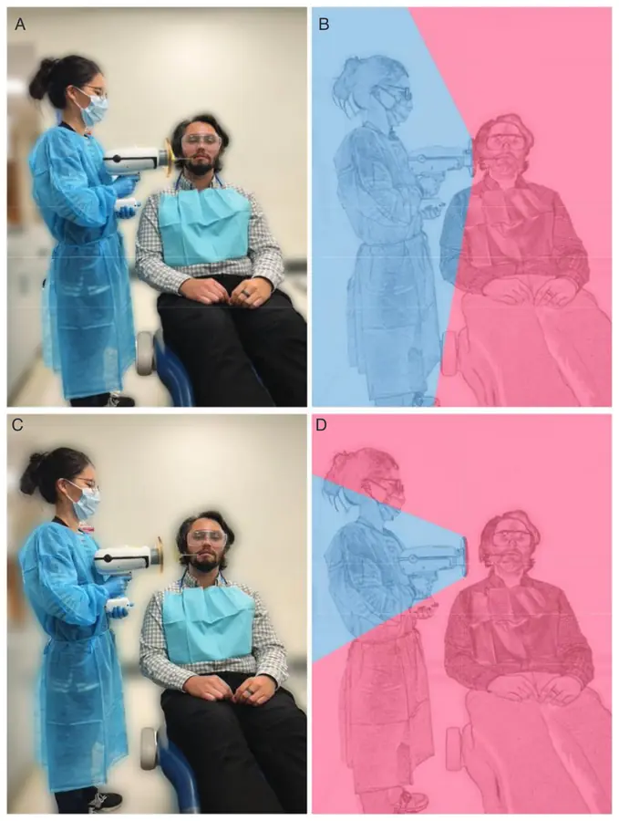

نسخه استخراجشده؛ ترجمه یا تأیید علمی انجام نشده است. وضعیت: captured
توصیهی رسمی، صریح و بدون ابهام است: «ADA، آکادمی آمریکایی رادیولوژی دهان و فک و صورت، و انجمن آمریکایی فیزیکدانان پزشکی توصیه میکنند که محافظت گنادی و جنینی بیمار حین تصویربرداری تشخیصی داخلدهانی، پانورامیک، سفالومتریک و CBCT متوقف شود.»

تاریخچهاش را بدان: «در اوایل دههی ۱۹۵۰، پیشبندهای سربی برای محدود کردن پرتوگیری گنادها و کاهش خطر اثرات وراثتی پرتویی توصیه شدند.»
و از آن زمان چه تغییر کرد؟ «از آن زمان، درک ما از اثرات وراثتی پرتویی در انسان تکامل یافته است. مطالعات فرزندان بازماندگان بمب اتمی هیچ شواهدی از بیماری مرتبط با پرتوگیری مادری یا پدری نشان نمیدهند، و بهخوبی پذیرفته شده که هیچ شواهدی از اثرات وراثتی پرتویی در انسان نیست.»
و نتیجهگیری منطقیاش: «در نبود هرگونه خطر، هیچ منطقی برای محافظت گنادها از پرتو در رادیوگرافی تشخیصی وجود ندارد.»
ولی یک تبصرهی عملی مهم: «بسیاری از ایالتها در آمریکا در حال حاضر کاربرد پیشبند محافظ و محافظ تیروئید را الزامی میکنند. پیروی از مقررات مقامات ایالتی و محلی تا زمانی که مقررات بهروز شوند توصیه میشود.» — یعنی علم یک چیز میگوید و مقررات هنوز چیز دیگری؛ و تا اصلاح مقررات، از مقررات پیروی کن.
توصیه: «ADA و آکادمی آمریکایی رادیولوژی دهان و فک و صورت در نظر میگیرند که خطرات سرطان تیروئید با تصویربرداری معاصر دندانوفکوصورت ناچیز است و توصیه میکنند محافظت تیروئید حین تصویربرداری داخلدهانی، پانورامیک، سفالومتریک و CBCT متوقف شود.»
ولی توجه کن که خطر انکار نمیشود: «غدهی تیروئید با توجه به موقعیت آناتومیکش، در معاینات رادیوگرافی دندانی مستعد پرتوگیری است. محافظت تیروئید میکوشد خطر سرطان تیروئید پرتویی را کاهش دهد — خطری که با شواهد کلاسیک و معاصر تأیید شده است.
پرتوگیری یک عامل خطر نیرومند تومورهای خوشخیم و بدخیم تیروئید است، بهویژه در جمعیت کودکان.» و مطالعات پس از چرنوبیل «نشان دادهاند که تیروئید در کودکان بهشدت به سرطان پرتویی حساس است».
پس چرا کالر توصیه نمیشود؟ استدلال سهبخشی را دنبال کن:
و جمعبندیاش: «بنابراین اگر تأکید درست بر کولیماسیون، معیارهای انتخاب، گیرندههای مناسب و دیگر اصول ایمنی پرتویی گذاشته شود، پرتوگیری کلی از تصویربرداری دندانی اثرات ناچیزی بر سرطانزایی تیروئید دارد.»
و یک زیان افزوده که اغلب نادیده گرفته میشود: «در واقع، محافظهای تیروئید ممکن است آرتیفکتهایی بسازند که کیفیت تصویر را تخریب کنند و تکرار را لازم سازند.» — و تکرار یعنی پرتوگیری دوباره؛ پس محافظ میتواند دوز کل را افزایش دهد.
اعداد را نخست ببین، بعد نتیجهگیری خودش میآید:

و نتیجهگیری: «بنابراین تصویربرداری تشخیصی بیمار باردار هیچ خطری برای رویان و جنین ندارد.» و خطر سرطان پرتویی هم کمّی شده است: «ناچیز، تقریباً ۱ در ۱٫۷ میلیون».
و سه تغییر عملی که از این اعداد میآید:
و باید پذیرفت که این تغییر چقدر غافلگیرکننده است: «این تغییرات با مفاهیم پیشین و بهخوبی پذیرفتهشدهی حفاظت پرتویی در بارداری در تضادند. بیشک، بیماران باردار ممکن است نبود محافظ را زیر سؤال ببرند و نگران باشند.»
ولی همین نگرانی یک فرصت است: «این فرصتی برای تیم سلامت دهان است تا نبود خطر معنادار و نبود سود چنین محافظتی را مؤثر منتقل کند. تأکید کن که سودهای تشخیصی و طرحریزی درمان برای حفظ سلامت دهان حیاتیاند و بیماری دندانی و پیامدهایش میتوانند بر سلامت کودک متولدنشده اثر نامطلوب بگذارند.»
اینجا برخلاف بیمار، پایش الزامی میشود: «قوانین فدرال آمریکا الزام میکنند که کارکنان باردار پایش شوند اگر دوز به رویان و جنین احتمالاً از ۱ میلیسیورت در کل دورهی بارداری فراتر رود.»
و سود دوگانهی این پایش: «پایش کارکنان رویکردی مؤثر برای شناسایی تغییر نامطلوب در عادات کاری است و کمک میکند به اعضای کارکنان که ممکن است دربارهی خطرات پرتوگیری شغلی دلواپس باشند پاسخ داده شود.»
و حد دوز کارکنان باردار پس از اعلام بارداری: «دوزسنجهای شخصی باید برای کارکنان باردار پرتوگیر شغلی فراهم شوند، و پرتوگیری شغلی باید پس از اعلام بارداری به ۰٫۵ میلیسیورت در ماه محدود شود» (گزارش ۱۷۷ NCRP، ۲۰۱۹). و ICRP حد را بهصورت «۱ میلیسیورت به رویان و جنین پس از اعلام بارداری» بیان میکند.
و تفاوت بنیادی را ببین: بیمار باردار حد دوز ندارد و نیازی به تأیید بارداری نیست؛ ولی کارکن باردار حد دوز دارد و پس از اعلام بارداری باید پایش شود. چون یکی برای سود مستقیم خودش پرتوگیر میشود و دیگری شغلی.